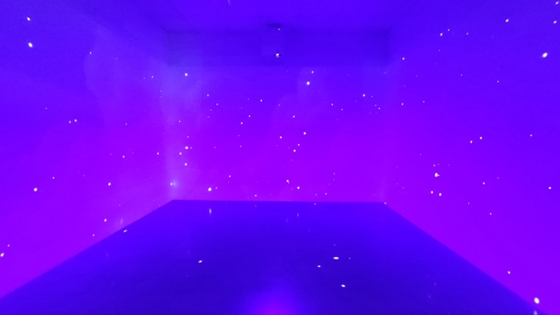
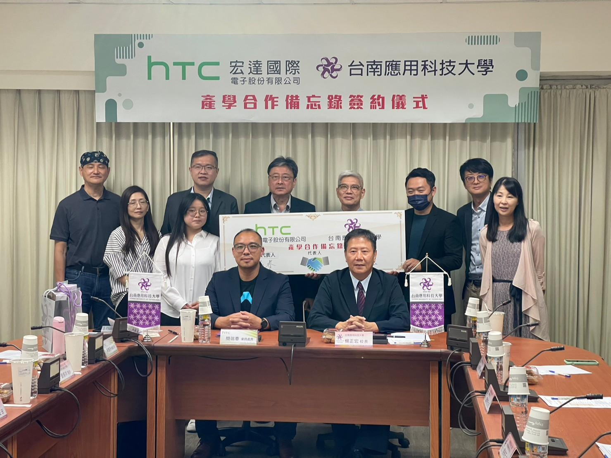

012026–2027 · 執行中
MIXED REALITY × HEALTHCARE
混合實境醫護急救車
模擬訓練
研發醫護急救車 MR 模擬訓練系統，進行系統評估與臨床實務推廣，將急救車學習情境轉化為互動操作。
EDUCATOR · RESEARCHER · CREATOR
台南應用科技大學 多媒體動畫系 副教授
從 XR 互動體驗到 AI 教學應用，
我關心科技如何成為可以操作、體驗與理解的學習工具。
把研究帶進課堂，
把想法做成作品。
01 — ABOUT
我是謝旻儕，研究與教學圍繞 XR 延展實境、互動多媒體設計、數位學習及情感運算。
我畢業於國立臺南大學數位學習科技學系博士班，現任台南應用科技大學多媒體動畫系副教授，曾任學術暨產學合作中心主任。從教材設計、系統開發到課堂應用，我希望把抽象的知識轉換成學生能親自探索的學習經驗。
研究場域涵蓋海洋教育、公民教育與醫護模擬訓練，也與產業、學校及文化機構合作開發互動內容。同時參與教師增能與數位學習輔導，將實作經驗帶進不同的教育現場。
學校教師介紹 ↗多媒體動畫系 副教授
數位學習科技學系 博士、碩士
台南應用科技大學 · 2022–2023
教育部相關計畫臺南市輔導教授
115 年度延攬及留住特殊優秀人才
114 學年度教師評鑑績優教師
109 學年度院級教學卓越教師
105 年度國立屏東大學傑出校友
02 — RESEARCH & PRACTICE
結合互動設計與學習研究，
探索 XR 與 AI 在不同場域的應用。
MIXED REALITY × HEALTHCARE
研發醫護急救車 MR 模擬訓練系統，進行系統評估與臨床實務推廣，將急救車學習情境轉化為互動操作。
AI × TEACHING PRACTICE
建置 VR 與 AI 智慧教學助理，融入虛擬實境實務課程，透過教學實踐研究檢視課程中的學習成效。
METAVERSE × CIVICS
開發適用於高中公民與社會課程的模擬法庭學習系統，結合虛擬空間與角色參與，研究其教學應用。
MIXED REALITY × NURSING
運用混合實境研發兒科連續性腎臟替代療法互動學習系統，結合醫護操作情境，進行評估與推廣。
CHATBOT × AR DEVELOPMENT
以多媒體動畫系的擴增實境實務課程為場域，設計學習輔助聊天機器人，研究課程引導與學習應用。
VIRTUAL REALITY × OCEAN
結合虛擬實境與海洋教育，研發 OP 帆船模擬學習系統，讓學生透過沉浸式體驗認識帆船與海洋。

BEYOND THE SCREEN
結合互動投影與 XR 技術建置沉浸式展演空間，讓師生的數位作品有更多展示與互動的可能。
沉浸式互動展演空間 · 實景照片03 — SELECTED PUBLICATIONS
Sun, W.-N., Hsieh, M.-C., & Wang, W.-F.
Hung, H.-Y., Wang, Y.-W., Hsieh, M.-C., Chen, P.-Y., & Chang, Y.-J.
Hsieh, M.-C.
Hsieh, M.-C., & Chen, S.-H.
04 — BOOKS

從零開始打造你的 VR 世界

結合真實與虛擬的新興科技

擴增實境應用與開發

結合虛擬與真實的新科技應用

結合虛擬與真實的新科技應用

遊戲設計與互動實作
05 — TEACHING & COLLABORATION
讓學生從使用工具，走向完成自己的作品。
課程結合概念理解、操作練習與專題製作，涵蓋人工智慧素養、XR 內容開發、程式設計與互動媒體。教師研習則從實際教學需求出發，規劃可在課堂應用的操作與練習。
擴增實境實務、虛擬實境實務、AR／VR 設計與製作、互動多媒體設計。
AI 素養與應用、人工智慧導論、Python 程式設計、網頁程式設計、資訊安全。
數位學習、AR／VR 融入教學、生成式 AI 教學應用、XR 虛實整合與數位展演實作。

SELECTED COLLABORATIONS
LET’S CONNECT
歡迎洽談學術研究、產學合作、專題指導與演講研習。